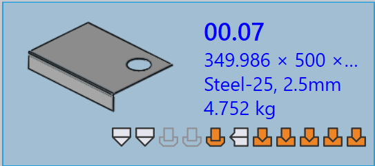

零件面板
本節說明與零件相關的操作，例如 重新匯入…、重新裝備…、重新命名…、匯出輸出 等，用於管理零件實例。

|
|


重新匯入…
-
在任何零件上按一下右鍵並按一下 重新匯入…。

-
所有機器上的所有選定零件工具實例都會被清除，包括自動處理工具和手動處理工具的實例。
-
現有的輸出檔案（CAD、Bend 和 Cut）會被移除。
-
零件會重新匯入，並為所有機器套用全新的 CAD 驗證和工具處理。
-
根據更新的工具處理結果建立新的輸出檔案。
重新裝備…
-
在任何零件上按一下右鍵並按一下 重新裝備…。

-
預設情況下，所有機器都已勾選並分組為雷射、沖孔、面板和折床。
-
按一下 確定 以繼續。這會移除所選機器的自動處理工具和手動處理工具實例，並刪除相關的輸出檔案。
-
選擇 保留現有輸出 核取方塊時，僅會重新處理之前移除輸出的零件工具，其他輸出保持不變。如果未勾選，所選機器的所有輸出檔案都會在重新工具處理期間移除並重新產生。
|
重新命名…
本節說明如何在 TruSmartCAM 中重新命名一個或多個零件。
-
在零件上按一下右鍵並按一下 重新命名…。

-
出現重新命名確認對話方塊，顯示當前的零件名稱。
-
輸入新名稱並按一下勾號 ✓ 圖示以確認，或按一下叉號 ✗ 圖示以取消重新命名操作。

-
要重新命名多個零件，請選擇所有所需的零件，然後在其中任何一個上按一下右鍵並按一下 重新命名…。
-
出現確認對話方塊，顯示選定零件的總數。
-
對於每個零件，輸入新名稱並按一下勾號 ✓ 圖示以逐一確認。
-
如果誤選了任何零件，請按一下叉號 ✗ 圖示以取消。或者，您可以在零件上按一下右鍵並按一下 取消重新命名 以跳過重新命名。
匯出輸出
此選項將零件輸出匯出到 工廠設定 中配置的目的地。（請參閱 Bend Settings 和 Cut Settings）
輸出位置在各自的輸出設定中為 Bend、Fold 和 Cut 分別定義。與折彎、折邊和切割操作關聯的所有工具都會為整個零件匯出。

如下所示，匯出的檔案會儲存在指定的資料夾中（例如 C:\PraxData\Out\Reports）。

| 匯出的檔案取決於操作類型。對於 Bend 和 Fold 操作，會產生 NC 檔案和報告。對於 Cut 和 Punch 操作，僅匯出零件檔案。 |
零件指派材料
具有 未分配材料 狀態的零件需要在進一步處理之前進行更新。以下步驟說明如何指派材料。
-
在顯示 未分配材料 狀態的零件上按一下右鍵並選擇 分配材料。

-
分配材料 視窗開啟。

-
對話方塊有四個部分：
-
建議 - 根據匯入零件的厚度自動建議原材料。
-
所有材料 - 列出 TruSmartCAM 中定義的所有材料類型。
-
所有原材料 - 顯示系統中可用的所有原材料。
-
已使用的原材料 - 顯示最近使用的原材料以供快速存取。
-
-
您可以使用頂部的 搜尋… (Ctrl+F) 欄位快速尋找材料。例如，輸入 "steel" 以顯示三個部分中所有符合的材料。
-
從篩選的清單中，從原材料清單中選擇所需的材料（例如 Steel-25）。
-
選定的材料將指派給零件。
軋制方向
軋制方向 是指零件中紋理的方向，這會影響零件的切割和處理方式。此選項允許您為零件資料庫中的零件指定 軋制方向。根據選定的方向，零件將以正確的方向放置以在可用的機器上進行切割。
-
在零件資料庫或工作視窗中的任何零件磁貼上按一下右鍵。
-
選擇首選的滾動方向：
-
無
-
水平
-
垂直

-
-
零件會根據選定的滾動方向自動為所有可用的切割機器重新處理工具。
-
零件磁貼將顯示選定的滾動方向，如下所示：
